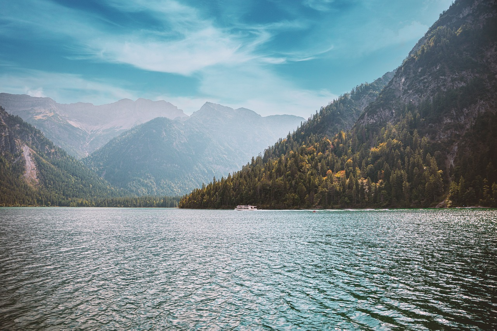

Lets be proactive and let pollution be reactive.

This company is a non-profit orgainzation that helps reduce the amount of pollution in the lakes. Lakes are known for having large amounts of pollution in them, we are helping reduce that number by spreeding the knowledge about water pollution. It was founded in 2000 by Nick Merrill.
Our campany goals are going to be to help reduce the amiunt of waste is going into the lakes and smaller bodies of water. By 2040 we want to cut the amount of waste that is founded in these areas of water in half.
Our service consists of having schedualed days were people go around the outskirts of the water and clean on any trash that is near and could make its way in to it. Having events were people can come and relax at the beach or lake that we are at that day they have to pay a fee to get in, then money goes towards new supplies that can help us. We also hire professionals once a month go around to as many bodies of water that we can to dive around and get as much trash out as possible.
- Scheduled clean ups
- Buying new supplies to help us clean
- Hiring professionals to clean in the water
NRDC.org
Echo.epa.gov
These links are important becasue the first link informs you about water pollution, then the second link lets you put you home area code in and all your information then you can see all the pollution around you.